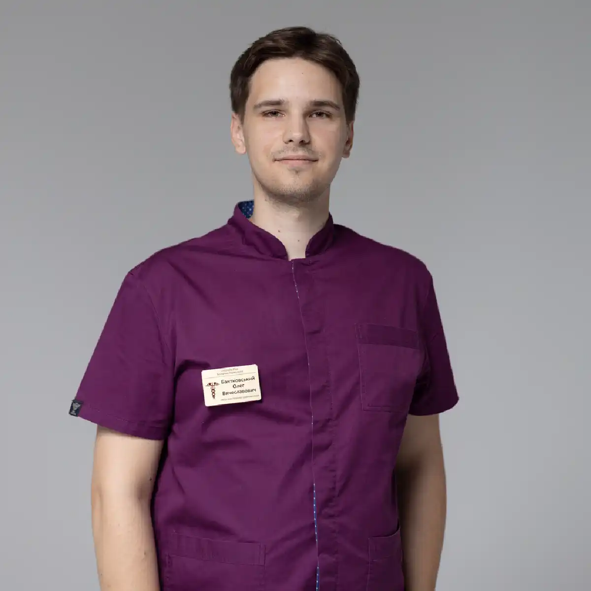

+38(068) 79 72 782
+38(068) 79 72 782Крапельниця від алкоголю
Швидкий спосіб прибрати будь-яке похмілля


Безкоштовна консультація, працюємо цілодобово 24/7
Швидкий спосіб прибрати будь-яке похмілля

Дата написання: Оновлюється...
Останнє оновлення: Оновлюється...
Крапельниця від алкоголю — це «золотий стандарт» сучасної наркології, що дозволяє в найкоротші терміни купірувати симптоми абстиненції та запобігти розвитку критичних ускладнень. На відміну від пероральних засобів, інфузійна терапія має 100% біодоступність: препарати потрапляють безпосередньо в системний кровотік, починаючи роботу миттєво. Це особливо важливо при вираженій інтоксикації, коли порушена робота шлунково-кишкового тракту і прийом таблеток стає малоефективним або неможливим. Завдяки внутрішньовенному введенню досягається швидкий терапевтичний ефект — вже в перші години зменшується нудота, минає слабкість, стабілізується артеріальний тиск і покращується загальне самопочуття пацієнта.
Інфузійна терапія спрямована не лише на усунення симптомів, а й на комплексне відновлення організму. Крапельниця сприяє виведенню токсинів, нормалізації водно-електролітного балансу, покращенню кровообігу та підтримці життєво важливих органів — печінки, серця та нервової системи. Це дозволяє знизити навантаження на організм і прискорити процеси відновлення. Крапельниці при інтоксикації допомагають зменшити тривожність, нормалізувати сон і стабілізувати психоемоційний стан, що особливо важливо при абстинентному синдромі. Комплексний підхід робить інфузійну терапію не просто способом полегшення стану, а повноцінним етапом лікування алкогольної залежності. Завдяки високій ефективності, швидкості дії та індивідуальному підбору складу крапельниця залишається одним із найбільш безпечних і результативних методів медичної допомоги при алкогольній інтоксикації та запої.
Гостра алкогольна інтоксикація — це стан отруєння організму продуктами розпаду етанолу, який може швидко прогресувати і призводити до серйозних порушень роботи внутрішніх органів. Вираженість симптомів залежить від кількості вжитого алкоголю, індивідуальних особливостей організму та загального стану здоров’я. Найбільш характерні ознаки інтоксикації:
У міру погіршення стану можуть з’являтися небезпечніші симптоми: сплутаність свідомості, дезорієнтація, виражена слабкість, порушення координації, галюцинації. Ці ознаки можуть свідчити про важку інтоксикацію або розвиток ускладнень. При посиленні симптомів, різкому погіршенні самопочуття або появі порушень свідомості необхідно негайно звернутися за медичною допомогою.
Крапельниця від алкоголю починає діяти практично відразу після початку інфузії, оскільки активні компоненти вводяться внутрішньовенно і миттєво надходять у системний кровотік, досягаючи терапевтичної концентрації в найкоротші терміни. Це забезпечує швидкий і контрольований ефект навіть при вираженій інтоксикації.
Вже протягом першої години відзначається помітне поліпшення стану: зменшується нудота і блювота, минає виражена слабкість, стабілізується артеріальний тиск, знижується тривожність і покращується загальне самопочуття пацієнта. Поступово нормалізується робота нервової системи та відновлюється здатність організму до саморегуляції. Висока ефективність інфузійної терапії обумовлена тим, що препарати минають шлунково-кишковий тракт. Це особливо важливо при важкому стані, коли пероральний прийом неможливий або неефективний через блювоту, порушене всмоктування та загальне виснаження організму. Внутрішньовенне введення дозволяє точно контролювати дозування і швидко коригувати терапію при необхідності.
Крім швидкого зняття симптомів, крапельниця запускає комплексні процеси відновлення: прискорюється виведення токсинів і продуктів розпаду алкоголю, нормалізується водно-електролітний баланс, покращується мікроциркуляція та підтримується робота печінки, серця і нервової системи. Організм отримує необхідні ресурси для відновлення, що значно скорочує період інтоксикації. Завдяки поєднанню швидкості дії, високої ефективності та індивідуального підбору складу інфузійна терапія залишається одним із найнадійніших і результативних методів допомоги при алкогольній інтоксикації та запої.
Склад крапельниці від алкоголю підбирається суворо індивідуально лікарем-наркологом з урахуванням ступеня інтоксикації, тривалості запою, загального стану пацієнта та наявності супутніх захворювань. Такий персоналізований підхід дозволяє впливати на основні наслідки алкогольного отруєння та досягти максимального терапевтичного ефекту. Найчастіше до складу інфузійної терапії входять:
При необхідності склад може бути розширений за рахунок додаткових препаратів — протиблювотних засобів, антиоксидантів, ноотропів та електролітів. Це дозволяє комплексно впливати на організм і прискорити процес відновлення.
Вартість крапельниці від алкоголю починається від 2199 грн.
| Популярні послуги | Ціна |
|---|---|
| Консультація нарколога | Від 1500 грн |
| Лікування алкоголізму | Від 2199 грн |
| Виведення із запою вдома | Від 2199 грн |
| Кодування від алкоголізму | Від 6000 грн |
Тривалість процедури крапельниці від алкоголю залежить від ступеня інтоксикації, тривалості вживання та загального стану пацієнта. В середньому інфузійна терапія займає від 1 до 4 годин, проте точний час визначається індивідуально після огляду лікаря. При легкому ступені інтоксикації достатньо однієї процедури, після якої стан помітно покращується: зменшується слабкість, минає нудота і стабілізуються основні показники. При середній і важкій інтоксикації лікування може бути тривалішим, з використанням розширеного складу препаратів і повільнішого введення розчинів для безпечного відновлення організму.
У складніших випадках, особливо після тривалого запою, може знадобитися повторна терапія або курс крапельниць протягом кількох днів. Такий підхід дозволяє повністю вивести токсини, відновити роботу внутрішніх органів і знизити ризик ускладнень. Контроль з боку лікаря протягом всієї процедури забезпечує безпеку лікування і дозволяє при необхідності оперативно скоригувати терапію.
При запої організм знаходиться в стані вираженої та тривалої інтоксикації, при якій відбувається накопичення токсичних продуктів розпаду алкоголю і порушується робота практично всіх систем організму. В таких умовах стандартних схем лікування часто виявляється недостатньо, тому крапельниця підбирається з розширеним і більш насиченим складом препаратів. Це дозволяє комплексно впливати на організм і враховувати індивідуальні особливості пацієнта, тривалість запою та ступінь тяжкості стану.
Основна мета інфузійної терапії — не лише швидке виведення токсинів і продуктів розпаду етанолу, а й відновлення водно-електролітного балансу, нормалізація обмінних процесів, стабілізація роботи серцево-судинної системи, печінки та нервової системи. Одночасно зменшуються прояви абстинентного синдрому — тривожність, слабкість, безсоння, тремор та інші неприємні симптоми. Для досягнення максимального ефекту до складу крапельниці включаються додаткові компоненти: препарати для захисту та відновлення печінки, засоби для стабілізації артеріального тиску і роботи серця, седативні препарати для зниження тривожності та нормалізації сну. При необхідності терапія доповнюється протиблювотними засобами, електролітами, антиоксидантами та підвищеними дозами вітамінів.
При похміллі крапельниця спрямована на швидке усунення симптомів інтоксикації та м’яке відновлення організму. На відміну від терапії при запої, тут використовуються більш щадні та збалансовані склади, оскільки ступінь отруєння зазвичай нижчий, а завдання — полегшити самопочуття і прискорити природні процеси відновлення.
Інфузійна терапія допомагає усунути основні прояви похмілля: головний біль, нудоту, слабкість, сухість у роті, підвищену чутливість до світла та звуків. Вже в перші години після початку процедури покращується загальний стан, нормалізується водно-сольовий баланс і знижується навантаження на організм. До складу крапельниці найчастіше входять детоксикаційні розчини, вітаміни, електроліти та препарати для підтримки нервової системи. При необхідності додаються засоби для зменшення нудоти, стабілізації тиску та покращення загального самопочуття.
Крапельниця вдома — це зручний, швидкий і ефективний спосіб отримати кваліфіковану медичну допомогу без необхідності відвідування клініки. Такий формат особливо актуальний при поганому самопочутті, вираженій слабкості, нудоті, запамороченні або сильній інтоксикації, коли поїздка до медичного закладу може бути скрутною або навіть небезпечною.
Лікар-нарколог приїжджає в найкоротші терміни після звернення, проводить повний огляд, оцінює загальний стан пацієнта, вимірює життєво важливі показники — артеріальний тиск, пульс, рівень сатурації. Також фахівець уточнює тривалість вживання, наявність хронічних захворювань та індивідуальні особливості організму. На основі цих даних підбирається персональна схема лікування. При необхідності терапія починається відразу на місці: встановлюється крапельниця, вводяться необхідні препарати, і лікар контролює стан пацієнта протягом всієї процедури. Такий підхід дозволяє не лише швидко зняти симптоми інтоксикації, а й забезпечити безпеку лікування, своєчасно реагуючи на будь-які зміни самопочуття.
Додатковою перевагою є те, що пацієнт перебуває у звичній обстановці, що знижує рівень тривожності та стресу. Немає необхідності витрачати час на дорогу, очікування в чергах або контакт з іншими пацієнтами. Це особливо важливо для людей, які цінують комфорт і хочуть отримати допомогу максимально швидко та делікатно. Окремо варто відзначити анонімність послуги — вся допомога надається конфіденційно, без передачі інформації третім особам і без постановки на облік. Це дозволяє звернутися за лікуванням без страху розголосу і зберегти особисту приватність.
При погіршенні стану важливо не відкладати виклик лікаря, оскільки на фоні алкогольної інтоксикації самопочуття може швидко погіршуватися і призводити до небезпечних ускладнень. Своєчасне звернення за медичною допомогою дозволяє уникнути важких наслідків і значно прискорити процес відновлення.
Нарколог приїжджає в найкоротші терміни, проводить огляд, оцінює загальний стан пацієнта, вимірює життєво важливі показники і визначає ступінь інтоксикації. На основі цих даних лікар відразу приступає до надання допомоги — при необхідності проводиться детоксикація, призначаються препарати для стабілізації стану і підтримки роботи внутрішніх органів. Оперативне втручання дозволяє швидко полегшити самопочуття, усунути основні симптоми і запобігти розвитку ускладнень з боку серця, нервової системи та інших органів. Чим раніше розпочато лікування, тим вища його ефективність і тим нижчі ризики для здоров’я пацієнта.
Після процедури важливо не обмежуватися лише тимчасовим покращенням самопочуття, а приділити увагу повноцінному та послідовному відновленню організму. Тривалий вплив алкоголю порушує обмін речовин, роботу нервової системи, печінки та серцево-судинної системи, тому дотримання рекомендацій лікаря відіграє ключову роль у закріпленні результату та запобіганні повторному погіршенню стану.
В першу чергу необхідно нормалізувати режим сну — повноцінний відпочинок допомагає відновити нервову систему, знизити рівень тривожності, покращити емоційний стан і прискорити процеси регенерації. Регулярний і глибокий сон сприяє відновленню сил і нормалізації роботи мозку. Не менш важливо дотримуватися правильного харчування. Рекомендується легка, збалансована їжа, багата вітамінами та мікроелементами: овочі, супи, каші, нежирні білки. Таке харчування підтримує роботу шлунково-кишкового тракту, допомагає заповнити дефіцит поживних речовин і поступово повертає енергію та працездатність.
Особливу увагу слід приділити питному режиму. Достатня кількість рідини — вода, компоти, регідратаційні розчини — сприяє виведенню залишкових токсинів, відновленню водно-електролітного балансу і покращенню загального стану організму. Це особливо важливо після стану зневоднення, яке часто супроводжує інтоксикацію. При необхідності лікар може призначити додаткову терапію: вітаміни, препарати для підтримки печінки, нервової системи та серцево-судинної системи, а також засоби для нормалізації сну і зниження тривожності. Це дозволяє прискорити відновлення, покращити самопочуття і мінімізувати наслідки інтоксикації.
Щоб викликати нарколога, достатньо зв’язатися з клінікою за телефоном і описати поточний стан пацієнта. Фахівець на лінії уточнить симптоми, тривалість вживання, наявність хронічних захворювань та інші важливі деталі, після чого оперативно направить лікаря на виїзд. У більшості випадків лікар приїжджає в найкоротші терміни (20-60 хвилин) і відразу приступає до огляду та лікування. Не відкладайте звернення, якщо стан викликає тривогу — своєчасна допомога дозволяє уникнути ускладнень і швидше стабілізувати самопочуття.
Телефонуйте прямо зараз: +38(050-021-69-57)

Статтю перевірено експертом
Могучев Станіслав
Лікар-терапевт, ординатор
Можливо цікава стаття:
Янтарна кислота, Бетаргін та Ентеросгель при алкогольної інтоксикації

Так, ми суворо дотримуємося повної конфіденційності на всіх етапах лікування. Інформація про пацієнта, діагноз та проходження терапії не передається третім особам. Звернення до нас не тягне за собою постановку на облік. Ви можете бути впевнені у безпеці та анонімності.
Програма лікування розробляється індивідуально після консультації з фахівцем. Враховуються вид залежності, її тривалість, фізичний та психологічний стан пацієнта. Такий підхід дозволяє підвищити ефективність терапії та знизити ризик зриву. Ми не використовуємо шаблонні рішення.
Так, ми супроводжуємо пацієнтів і після основного курсу лікування. Проводяться консультації, рекомендації щодо адаптації та профілактики рецидивів. За потреби можлива подальша психологічна підтримка. Це допомагає зберегти результат та повернутися до повноцінного життя.
Анонимно

Никакими усилиями самостоятельно я не смогла преодолеть запой, и наступала ломка, сопровождаемая повышенным давлением и пульсом. Тогда я решила обратиться за помощью в клинику. Врачи оказали мне неоценимую поддержку! Уже прошел месяц, и я не только не употребляю алкоголь, но даже не испытываю к нему желания!
Анонимно
Могу с уверенностью порекомендовать данный центр для тех, кто ищет помощь при выводе из запоя. Я неоднократно обращался к ним и могу сказать, что цена соответствует качеству услуг. После проведения капельницы в клинике, вся тяга к алкоголю проходит, и я чувствую себя гораздо лучше. Это действительно эффективный метод, и я благодарен клинике за их профессионализм и заботу!
Анонимно
Неоднократно я пытался бросить алкоголь самостоятельно, но каждый раз уговаривал себя продолжать. Я сначала ограничивался одной бутылкой в день, потом двумя, и в итоге вновь попадал в запой. Но в итоге, я смог прекратить употребление алкоголя только после того, как обратился в центр Амбрелла и заказал у них услугу вывода из запоя. Уже не пью 3 месяца и удалось полностью восстановиться. Благодарю врача который меня вел - Алексея Валерьевича.
Анонимно
Здравствуйте! Я хотел бы выразить свою искреннюю благодарность клинике за быстрое и профессиональное освобождение моего мужа пивного рабства! Ранее у меня уже не было никаких надежд на его выздоровление. Однако, благодаря вашим перспективным методам лечения, мы теперь идем к полному отказу от алкоголя. Вы дали нам новую надежду и оказали неоценимую помощь! Спасибо вам за все!
Анонимно
Я долгое время страдал от запоев и не мог справиться с этой проблемой. Однако, когда я обратился в этот центр, они быстро помогли мне вернуться на ноги, и самое главное - предоставили мне возможность не возвращаться к запоям. Уже почти полгода я не испытываю запоев! Это для меня настоящее чудо, я никогда не думал, что смогу так преодолеть свои проблемы. Большое спасибо центру Амбрелла!
Анонимно
Благодарю ваш центр Амбрелла за оперативное и высококачественное лечение! Женский алкоголизм - это настоящее горе, с которым невозможно справиться в одиночку. Я уже потеряла надежду, но благодаря вашей помощи, она вернулась ко мне! Отдельная благодарность врачу Станиславу Вячеславовичу, а также благодарность Богу за то, что он послал мне такое чудо как ваша центр! Спасибо вам всем!
Анонимно
Хочу выразить благодарность врачу Владиславу Алексеевичу за то, что вы избавили меня от этого ужаса. Я уже был в отчаянии, перепробовал множество клиник и центров, но только здесь я наконец получил настоящую помощь! Алкоголь полностью разрушил меня, и если бы не ваша помощь, я, возможно, уже не был бы жив. С вами я смог вернуть себе жизнь и буду благодарен вам всегда!
Номер телефону:
+380 (68) 797 27 82
+380 (50) 021 69 57
Адресу наркологічного центра вашого міста уточнюйте за
телефоном
Працюємо: Київ, Одеса, Львів, Харків, Дніпро, Запоріжжя,
Черкасах, Чугуєві, Чорноморську, Кам'янському
Telegram: t.me/umbrellaplus
Графік работы: Цілодобово